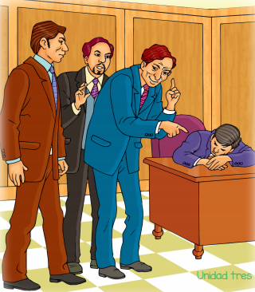

Reflexiono para avanzar
Reflexiono para avanzar
3. Lee los siguientes textos y reconoce sus características y contenido
La señorita de Trevélez
(Fragmento)
ESCENA I
MENÉNDEZ, el CRIADO de enfrente; luego, TITO GUILOYA, MANCHÓN y TORRIJA. Al levantarse el telón, aparece MENÉNDEZ con el uniforme de ordenanza del Casino y zapatillas de orillo, durmiendo, sentado detrás de la mesita de la derecha. Se escucha en la calle el pregón lejano de un vendedor ambulante, y más lejana aún la música de un piano de la vecindad, en el que alguien ejecuta estudios primarios. Un CRIADO, en la casa de enfrente, limpia los cristales de la ventana de la derecha. La otra permanecerá cerrada. El CRIADO, subido a una silla y vistiendo delantal de trabajo, canturria un aire popular mientras hace su faena. Por la puerta primera izquierda, aparecen TITO GUILOYA, PEPE MANCHÓN y TORRIJA. El primero es un sujeto bastante feo, algo corcovado, de cara cínica, biliosa y atrabiliaria. Salen riendo.
MANCHÓN. —¡Eres inmenso!
TORRIJA. —¡Formidable!
MANCHÓN. —¡Colosal!
TORRIJA. —¡Estupendo!
TITO. —Chis... (Imponiendo silencio). ¡Por Dios, callad! (Señalándole y en voz baja. Andan de puntillas). Menéndez en el primer sueño.
TORRIJA. ¡Hombre, es una burla tan cruel...!
TITO. —¡Qué más da! La burla es conveniente siempre; sanea y purifica; castiga al necio, detiene al osado, asusta al ignorante y previene al discreto. Y, sobre todo, cuando, como en esta ocasión, escoge sus víctimas entre la gente ridícula, la burla divierte y corrige.
MANCHÓN. —Eres un tipo digno de figurar entre los héroes de la literatura picaresca castellana.
TORRIJA. —¡Viva Tito Guiloya!
TITO. —Yo no, compañeros… Sea toda la gloria para el Guasa Club del que soy indigno presidente y vosotros dignísimos miembros.
MANCHÓN. —¡Silencio...! (Escucha). Alguien se acerca.
TORRIJA. (Que ha ido a la puerta derecha). —¡Don Marcelino…, es don Marcelino Córcoles!
TITO. —¡Ya van llegando! Ya van llegando nuestros hombres. ¡Chis...! Salgamos por la escalera de servicio.
MANCHÓN. —Vamos.
TITO. —Compañeros, empieza la farsa. Jornada primera.
TITO. —¡Ja, ja, ja...! (Se van de puntillas, riendo, por la segunda izquierda).
ESCENA II
MENÉNDEZ y DON MARCELINO, por la primera derecha.
DON MARCELINO(Entrando) —Nadie. El salón de lectura, desierto, como siempre. Es el Sahara del Casino. Menéndez, dormido, como de costumbre; pues, ¡vive Dios!, que no veo señal de lo que en este anónimo y misterioso papel se me previene. Anoche lo recibí, y dice a la letra... (Leyendo). “Querido Córcoles: Si quieres ser testigo de un ameno y divertido suceso no faltes mañana, a las once menos cuarto, al salón de lectura del Casino. Llega y espera. No te impacientes. Los sucesos se desarrollarán con lentitud, porque la broma es complicada. Salud y alegría, para gozarla. V.”. ¿Qué será esto...? Lo ignoro; pero está la vida tan falta de amenidad en estos poblachos que el más ligero vislumbre de distracción atrae como un imán poderoso. Esperaré leyendo. Veamos qué dice la noble prensa de la ilustre ciudad de Villanca. (Busca). Aquí están los periódicos locales El Baluarte, La Muralla , La Trinchera. ¡Y todo esto para defender a un cacique...! El Grito, La Voz, , El Clamor, El Eco. Y esto otro para decir las cuatro necedades que se le ocurran al susodicho cacique… (Deja los periódicos con desprecio). ¡Bah! Me entretendré con las ilustraciones extranjeras. (Coge una y lee). U, u, u, u, u... (DON MARCELINO, al leer, produce un monótono ronroneo, que crece y apiana alternativamente, y que no tiene nada que envidiar al zumbido de cualquier moscardón. MENÉNDEZ sacude el aire con la mano como espantándose una mosca. Las primeras veces DON MARCELINO no lo advierte y sigue con su ronroneo. Al fin, observa el error de MENÉNDEZ). ¿Qué hace ese...? (Llamándolo). Menéndez... (Más fuerte). ¡Menéndez!

MENÉNDEZ (Despertando). —¿Eeeh...?
DON MARCELINO. —No sacudas, que no te pico.
MENÉNDEZ. —¡Caramba, señor Córcoles! Hubiera jurado que era un moscón. (Se despereza).
DON MARCELINO. —Pues soy yo. Dispensa.
MENÉNDEZ. —Deje usted; es igual
DON MARCELINO. —Tantísimas gracias.
MENÉNDEZ. —Pero ¿cómo tan de mañana? ¿Es que no ha tenido “usté” clase en el “Estituto”?
DON MARCELINO. —Que los chicos no han querido entrar hoy tampoco.
MENÉNDEZ. —¿Pues...?
DON MARCELINO. —Es el cumpleaños del gobernador civil.
MENÉNDEZ. —¡Hombre! ¿Y cuántos cumple?
DON MARCELINO. —El año pasado cumplió cincuenta y cuatro; este año, no sé, porque es una cuenta que le gusta llevar a él solo. ¿Ha venido el correo de Madrid?
MENÉNDEZ. —Abajo estará.
DON MARCELINO. —Pues anda a subirlo, hombre
MENÉNDEZ. —Es que, como a mí no me gusta moverme de mi obligación...
DON MARCELINO. —No, y que además tú, cuando te agarras a la obligación, no te despierta un tiro. […]